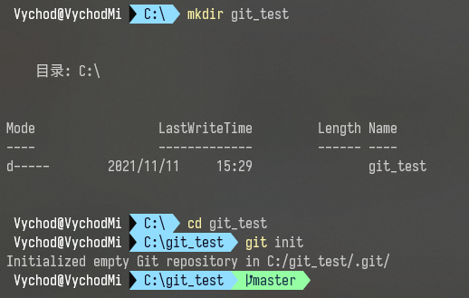

学习使用 Git 进行版本管理
什么是 Git ？
既然要学习 Git ，那我们首先就肯定要知道 Git 是个什么东西。举个简单的例子，相信很多人都有过修改一个东西修改很多次的体验吧，最好的结果是最后达到了甲方的要求，但是没法保证甲方爸爸提出一句“第一版挺好的”，那么这个时候你就疯狂在电脑上找第一版，然后发现你始终用的是同一个文档进行修改，根本找不到第一版了。所以很多人开始养成了一些好习惯，一个作业进行的时候，每到一个关键点，就复制当前作业作为节点记录，也就是备份，这就是最简单的很容易想到的“版本管理”。但是这样带来的结果是，你的文件夹有一堆同样名字的文件，那么有的人会说了，我会按照时间把不同节点的文件起不一样的名字，这确实是一个很好的解决方法，但是你这个文件夹还是会有一大堆文件。如果你的单个文件比如说你的 word 很大，再如果你干了一个月每天都有两三个版本，那么你这一个月下来的文件占据存储空间的大小是非常庞大的。
多是一方面，难以管理是另一个大问题。老板说，你去给我找到 xxx 需求还没提出的那个版本，这个时候如果你想不起来是哪个时间，那么你的时间戳就毫无用处了；又有人要说了，我有版本管理文档，会记录每一版都修改了什么。你这么一说，还真把我说住了，不对，没有，完全没有，还是有个大问题，一个最大的问题，很多人都不是一个人在负责一份工作吧？肯定是有队友相互配合分工合作的吧？我们还是拿 word 举例子，比如说一个文件有三章，ABC三个人分别负责一章，最后怎么合并呢？简单的复制粘贴不就完了。那如果有一章三个人都参与修改了呢？那最后怎么合并呢？
2005年，Linus 花了两周的时间用 C 语言制作了 Git，这就是牛人吗？从这以后， Git 迅速成为了全世界最流行的分布式版本控制系统。2008年， Github 正式上线，成为了事到如今也是每个程序员心中最温暖的港湾（不是说抄代码哈）。
刚刚提到 Git 的时候有一个标签叫做 分布式，大家也可以很快想到它的反义词：集中式，那么这两种方式的版本控制系统到底有什么区别呢？
先说集中式版本控制系统，版本库是集中存放在中央服务器的，而干活的时候，用的都是自己的电脑，所以要先从中央服务器取得最新的版本，然后开始干活，干完活了，再把自己的活推送给中央服务器。中央服务器就好比是一个图书馆，你要改一本书，必须先从图书馆借出来，然后回到家自己改，改完了，再放回图书馆。曾经最常用的集中式版本控制系统有 CVS 和 SVN。
集中式版本控制系统最大的毛病就是必须联网才能工作，如果在局域网内还好，带宽够大，速度够快，可如果在互联网上，遇到网速慢的话，砸电脑的心都有了。
这就足以体验分布式的好处了。首先，分布式版本控制系统根本没有“中央服务器”，每个人的电脑上都是一个完整的版本库，这样，你工作的时候，就不需要联网了，因为版本库就在你自己的电脑上。既然每个人电脑上都有一个完整的版本库，那多个人如何协作呢？比方说你在自己电脑上改了文件A，你的同事也在他的电脑上改了文件A，这时，你们俩之间只需把各自的修改推送给对方，就可以互相看到对方的修改了。
和集中式版本控制系统相比，分布式版本控制系统的安全性要高很多，因为每个人电脑里都有完整的版本库，某一个人的电脑坏掉了不要紧，随便从其他人那里复制一个就可以了。而集中式版本控制系统的中央服务器要是出了问题，所有人都没法干活了。
Git 的安装
鉴于我手头只有一台装有 win10 系统的工作本，所以我就只介绍一下 Windows 系统下的 Git 安装了，我们可以之间去官网下载安装包。
当你开始菜单可以看到这几个小东西的时候，就说明你的 Git 已经安装好了。但是我们还需要进行一步操作，就是让你的 Git 有个标签，和这个世界上那么多的 Git 区分开来。让我们在命令行中输入下面两条命令：
$ git config --global user.name "Your Name" |
配置完毕之后，你的 Git 也就可以见到其他 Git 的时候进行自我介绍了。
这里的 --global 参数是指全局配置，你电脑所有的 Git 仓库都会用这个配置，当然也可以对不同的仓库进行不一样的配置
创建版本库
找个你喜欢的地方生成一个空目录，然后进去，然后初始化

这样的话，这个 git_test 文件夹就变成了一个使用 Git 来进行版本管理的仓库了。随之变化的是该文件夹里面会有一个 .git 文件夹，这里面是 Git 用来跟踪管理版本的，咱尽量还是别去动它哈，咱动不起……
有人说我看不见这个文件，你可以选择把 文件夹上方工具栏 -> 查看 -> 勾选 “隐藏的项目”

又有人说为什么我在命令行里面用高级的 linux 命令 ls 却看不见这个文件夹呢？这是因为它是默认隐藏的，如果你想看的话，你可以试试更高级的 ls -ah 哦
把文件添加到版本库
首先这里再明确一下，所有的版本控制系统，其实只能跟踪文本文件的改动，比如TXT文件，网页，所有的程序代码等等，Git也不例外。版本控制系统可以告诉你每次的改动，比如在第5行加了一个单词“Linux”，在第8行删了一个单词“Windows”。而图片、视频这些二进制文件，虽然也能由版本控制系统管理，但没法跟踪文件的变化，只能把二进制文件每次改动串起来，也就是只知道图片从100KB改成了120KB，但到底改了啥，版本控制系统不知道，也没法知道。
不幸的是，Microsoft的Word格式是二进制格式，因此，版本控制系统是没法跟踪Word文件的改动的，前面我们举的例子只是为了演示，如果要真正使用版本控制系统，就要以纯文本方式编写文件。
因为文本是有编码的，比如中文有常用的GBK编码，日文有Shift_JIS编码，如果没有历史遗留问题，强烈建议使用标准的UTF-8编码，所有语言使用同一种编码，既没有冲突，又被所有平台所支持。
随便在其他地方写好一个 readme.txt，再在里面写上两行自己想写的话，这里我打算写
Git is a version control system. |
然后把它拖到 git_test 里面，再在终端 cd 到这个目录，将你想上传的文件 add 一下，就相当于告诉 Git，我要上传这个文件，你先拿笔给我记好咯！
$ git add readme.txt |
add 之后如果你想添加其他文件，你可以继续 add ，但是要确保你所 add 的文件存在于当前目录下；如果你想把当前文件夹里面的所有东西都 add 你可以选择高级的 git add .
$ git add . |
这个高级的点，是很多人常用的吧，一键就完事了
如果你想知道现在 Git 都记下了什么文件，你可以使用一个 Git 命令来查询 git status

如果你想上传的东西都让 Git 记好了，那么你就可以让 Git 把你的这些东西上传到版本库里面去了
$ git commit -m "this is my first commit" |
-m后面输入的是本次提交的说明，可以输入任意内容，当然最好是有意义的，这样你就能从历史记录里方便地找到改动记录

git commit 命令执行成功后会告诉你，1 file changed：1个文件被改动（我们新添加的readme.txt文件）；2 insertions：插入了两行内容（readme.txt有两行内容）。
Git 怎么干活的
我们已经成功地添加并提交了一个readme.txt文件，现在，是时候继续工作了，于是，我们继续修改readme.txt文件，改成如下内容：
Git is a distributed version control system. |
这个时候再查询一下git status

我们可以大概看出的意思就是，我改了这个文件，但是没有上传到 commit 里面。
但如果是别人修改的呢？你要怎么才能知道别人进行了什么修改呢？我们就要学习一个新的 Git 命令了：git diff， diff 也就是 diffrence 嘛（疯狂炫耀扎实的小学英语基础）

这里的话 减号 就是代表被修改的，加号 表示修改完的模样
修改完了，那我们肯定得提交啊，add commit 一气呵成，我太牛了把这也

nothing to commit, working tree clean
完事了？下班！
不对还没下班，还有几个神奇功能没告诉大家呢！
版本回退
那么多此提交之后，那我该咋知道这个仓库的提交情况呢？让我们来试一下
$ git log |
理论上来说我们可以看到三条提交信息
- 最近一次的提交信息
- 上一次的提交信息
- 最早的一次的提交信息
那么我想回到上一个版本的话，我该怎么做呢？
在 Git 中，使用 HEAD 代表当前版本，上一个版本是 HEAD^ ，上上一个版本是 HEAD^^ ，那么往前一百个呢？你当然可以选择使用100个 ^，但是这里我们更推荐使用 HEAD~100 。

通过观察 id 号我们可以发现确实是实现了版本回退
这个时候你如果说，我不想回退了，我反悔了，嘿嘿，这颗有点麻烦咯，如果你使用 git log 你会发现刚刚那个 commit 消失了！
别急别急，我们往上滑，找到刚刚那条的 ID，deb08f…… 对对对，就是这个，看我来施展魔法

嘿嘿！成功了
这里的 id 是使用 SHA1 进行编码的时间戳，可以支持一个模糊搜索，但是建议至少四五位这样子，要不然可能会找出来两条 id 前缀一样的 commit 信息
但是如果你关闭了电脑之后才后悔了咋办呢？别急，Git 还留了一手

使用 git reflog 可以显示你在当前仓库执行的每一次命令
工作区和暂存区
工作区与暂存区其实不是同级的。根据工作逻辑我们可以有 工作区 和 版本库 两个分类。工作区 指单个用户在电脑可以看到的目录，比如我们到目前为止一直在操作的 git_test 文件夹。与之相对的就是版本库，指当前这个多人协作的项目也就是工作区文件夹里面的 .git 文件夹，它就是当前项目的一个版本库。
版本库里面主要包含两个部分 stage 和 master，stage 就是 暂存区 ，master 是 Git 自动创建的第一个分支，master 分支拥有一个叫做 HEAD 的头指针。
结合之前的 add 和 commit 我们来分析一下 工作区 和 暂存区
首先 git init 之后，我们就参与到了一个协同的项目中去，你在这个文件夹下的所有文件都处于你自己的一个 工作区 中，当你在终端输入 git add xxx 操作之后，你的这些文件就会被同步到 .git 中的 暂存区，当你停止添加并执行 git commit 命令之后，Git 会将 暂存区 中的文件推到 master 分支上去，当然你也可以自行选择其他分支
这整个过程都可以在每一步完成之后只用 git status 来监视文件动向
管理修改
为了更好理解 Git 到底哪里好，我们可以试着去完成下面这个流程
第一次修改 -> git add -> 第二次修改 -> git commit
执行结束过后我们会发现，第二次的修改并没有同步到版本库中，当前版本存的文件还是第一次修改后的样子
为什么会这样呢？那是因为 Git 跟踪并管理的是修改，而非文件。增删一行、修改字符、创建一个新文件… 这些都是对原有文件的以原有文件为基础的一个修改
所以为了确保万无一失，大家可以选择在每一个 commit 之前百分百加上一个 add
撤销修改
首先介绍一下这个命令格式
$ git checkout -- filename |
这个命令的作用就是，把 filename 在工作区的修改全部撤销，这里会有两种情况：
- filename 修改之后还没有执行 add，也就是还没有进入暂存区，这时候撤销，就会回到和版本库一模一样的版本
- filename 上一次的修改之后已经 add 进入了暂存区，在这次修改后执行 撤销，就会回到上一个版本，也就是和暂存区中的版本是一样的
这时候大家觉得这个 git checkout 和我们刚刚学的 git reset 有什么区别呢，其实还是有一定区别的
git reset 是把 暂存区 的修改撤销掉，就是和 Git 说我不提交了，你还给我，然后我就拿着 Git 还回来的版本覆盖了本地 工作区 的版本
二者的区别主要是一个文件传输方向的区别
新版 Git 把
git reset修改成了git restore，但是使用旧指令仍旧可以完成想要完成的操作
所以为了更好的理解两种命令，我们可以列出几个场景：
场景一：我修改了工作区一个文件的内容，想直接丢弃工作区的修改，选择 git checkout -- <file>
场景二：我不仅改了，我还 add 了，进了 暂存区 了，但是我想放弃这个 add，那就使用 git reset HEAD <file> ，这个时候也就是回到了场景一了，你已经在 工作区 修改完了
场景三：我 commit 都，才后悔，这个时候就需要 git reset --hard HEAD^
删除文件
远程仓库
Git是分布式版本控制系统，同一个Git仓库，可以分布到不同的机器上。怎么分布呢？最早，肯定只有一台机器有一个原始版本库，此后，别的机器可以“克隆”这个原始版本库，而且每台机器的版本库其实都是一样的，并没有主次之分。
我们选择找一台电脑充当服务器的角色，每天24小时开机，其他每个人都从这个“服务器”仓库克隆一份到自己的电脑上，并且各自把各自的提交推送到服务器仓库里，也从服务器仓库中拉取别人的提交。
你可以选择把自己的服务器配置成可以运行 Git ，但是初学者完全可以考虑使用 Github 的 Git 仓库托管服务的功能。也就是说，要注册一个GitHub账号，就可以免费获得Git远程仓库。
第1步：创建 SSH key
第1步：创建SSH Key。在用户主目录下，看看有没有.ssh目录，如果有，再看看这个目录下有没有id_rsa和id_rsa.pub这两个文件，如果已经有了，可直接跳到下一步。如果没有，打开Shell（Windows下打开Git Bash），创建SSH Key：
$ ssh-keygen -t rsa -C "youremail@example.com" |
把邮箱修改自己的邮箱地址，然后一路回车顺通无阻
之后前往文件夹看一眼

ok！get it！
第2步：连接 Github
登陆GitHub，打开“Account settings”，“SSH Keys”页面

然后，点“Add SSH Key”，填上任意Title，在Key文本框里粘贴id_rsa.pub文件的内容

点“Add Key”，你就应该看到已经添加的Key

添加远程库

一步一步走下来就是创建好了一个 github 上面的仓库了，2：仓库名称；3：仓库介绍

我们可以看到两种方法添加远程仓库，第一种就是你本地啥都没有，第二种是你存在一个工作区
如果从头走到现在，那么我们应该使用的是第二种方法
# 添加连接 |
接下来我们就可以看到非常 nice 的界面了

接下来我们刷新刚刚建立的仓库

ok，就是这么简单！
接下来对刚刚命令中的一些点来多说几句：
- 添加连接时的
origin是可以随便起的名字，你也可以起自己喜欢的名字，如果添加之后想删除的话，就可以执行git remote remove <name>- 建立分支时的
-M则可以实现强制修改分支的名称- 推流时的
git push <远程主机名> <本地分支名>:<远程分支名>- push 的时候可以使用
git push --force origin master进行强制推送，会导致远程资源库被覆盖，这个尽量避免使用
从远程库克隆
$ echo "# git_test" >> README.md |
要克隆一个仓库，首先必须知道仓库的地址，然后使用 git clone 命令克隆。
Git支持多种协议，包括 https ，但 ssh 协议速度最快。
分支管理
创建和合并分支
创建与合并分支 - 廖雪峰的官方网站 (liaoxuefeng.com)
解决冲突
解决冲突 - 廖雪峰的官方网站 (liaoxuefeng.com)
分支管理策略
分支管理策略 - 廖雪峰的官方网站 (liaoxuefeng.com)
Bug 分支
Bug分支 - 廖雪峰的官方网站 (liaoxuefeng.com)
Feature 分支
Feature分支 - 廖雪峰的官方网站 (liaoxuefeng.com)
多人协作
多人协作 - 廖雪峰的官方网站 (liaoxuefeng.com)
Rebase
Rebase - 廖雪峰的官方网站 (liaoxuefeng.com)
标签管理
现在有两个场景
“请把上周一的那个版本打包发布，commit号是6a5819e…”
“一串乱七八糟的数字不好找！”
“请把上周一的那个版本打包发布，版本号是v1.2”
“好的，按照tag v1.2查找commit就行！”
大家应该都会选择第二种，那么我们就需要给每一个版本打一个标签，也就是 tag
创建标签
首先，切换到需要打标签的分支上
命令
git tag <tagname>用于新建一个标签，默认为HEAD，也可以指定一个commit id；命令
git tag -a <tagname> -m "blablabla..."可以指定标签信息；命令
git tag可以查看所有标签。
操作标签
- 命令
git push origin <tagname>可以推送一个本地标签； - 命令
git push origin --tags可以推送全部未推送过的本地标签； - 命令
git tag -d <tagname>可以删除一个本地标签； - 命令
git push origin :refs/tags/<tagname>可以删除一个远程标签
自定义 Git
忽略特殊文件
- 忽略某些文件时，需要编写
.gitignore； .gitignore文件本身要放到版本库里，并且可以对.gitignore做版本管理！
自定义别名
$ git config --global alias.st status |
这行代码的作用执行之后，我们就可以在命令行操作的时候用 git st 去代替 git status
配置Git的时候，加上--global是针对当前用户起作用的，如果不加，那只针对当前的仓库起作用。每个仓库的Git配置文件都放在.git/config文件中
搭建 Git 服务器
安装
git$ sudo apt-get install git
创建一个
git用户，用来运行git服务$ sudo adduser git
创建证书登录
收集所有需要登录的用户的公钥，就是他们自己的
id_rsa.pub文件，把所有公钥导入到/home/git/.ssh/authorized_keys文件里，一行一个初始化Git仓库
# 先选定一个目录作为Git仓库，假定是/srv/sample.git，在/srv目录下输入命令：
$ sudo git init --bare sample.git
# Git就会创建一个裸仓库，裸仓库没有工作区，因为服务器上的Git仓库纯粹是为了共享，所以不让用户直接登录到服务器上去改工作区，并且服务器上的Git仓库通常都以.git结尾。然后，把owner改为git：
$ sudo chown -R git:git sample.git禁用shell登录
出于安全考虑，第二步创建的git用户不允许登录shell，这可以通过编辑
/etc/passwd文件完成。找到类似下面的一行：git:x:1001:1001:,,,:/home/git:/bin/bash
# 改为：
git:x:1001:1001:,,,:/home/git:/usr/bin/git-shell克隆远程仓库
$ git clone git@server:/srv/sample.git
管理公钥：如果团队很小，把每个人的公钥收集起来放到服务器的
/home/git/.ssh/authorized_keys文件里就是可行的。如果团队有几百号人，就没法这么玩了，这时，可以用Gitosis来管理公钥。管理权限：Git是为Linux源代码托管而开发的，所以Git也继承了开源社区的精神，不支持权限控制，但是也是可以通过 钩子 去完成权限管理，可以但没有必要
结束语
貌似就学完了吧，这是我写的第一篇教程，其中也有很多地方是借鉴的别人的思路，虽然用了这么长时间 Git ，但是这么一整个复习下来，真的感觉整个人都通透了，很多不理解的点也变得更加清晰了
最后附上一本 Git 万能工具书，是廖雪峰老师发在他的个人网站上的。